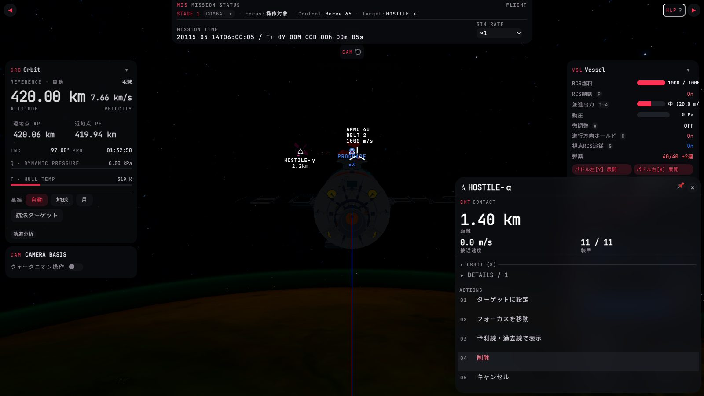
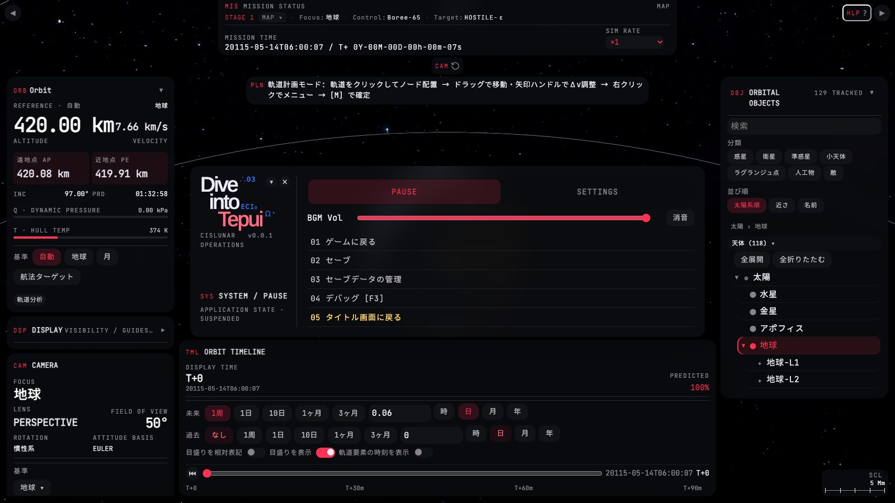

このページは重なって出る面の作り直し。現行の撮影で目立つのは3点で、どれも 01 表示の文法 の規則で解ける。
(1) プロパティウィンドウの操作が番号付きの文字列リスト(01〜05)で、番号は押せるキーに見えるが何も起きない。5行が各44pxを取り、ウィンドウが画面下端へ迫る。
(2) ESC メニューのタブ・ボタン・BGM の帯が主役色の赤い面で塗られ、「選択中」と「押せる」が区別できない。ここも項目に番号が振られ、キーは [F3] が1つだけ文字の中に混じる。
(3) ヘルプのキー表記が赤い小文字の列で、タッチのジェスチャとキーが同じ見た目。
方針は、ウィンドウの本文を「読む → 畳む → 操作」の順に、操作はキー付きのボタン、状態はトグル・ピップ、選択は中立の面に統一すること。SPEC UI-DESIGN §4・§8 の挙動(クリップ・排他・背景を暗転しない・操作項目は対象ごと)はすべて保存している。
01プロパティウィンドウ — 敵 HOSTILE-α(戦闘ビュー)
現行 property.jpg と同じ位置・同じ状況(戦闘ビュー、HOSTILE-α を右クリック、ターゲットは HOSTILE-ε のまま)。
比較モードで左右にワイプできる。左右のレール・上部ストリップは別ページの担当なので、ここでは破線の枠で位置だけ示す。

2.2km
- 題名を1行に。種別グリフ・名前・種別タグ(
CNT · 敵機)・ピン・閉じるを1行へ。現行は題名の下に赤いCNT CONTACTの行が別にあり、ピンは色付きの絵文字(📌)で警告と見分けにくい。タグは中立色へ、ピンは文字色が付く円形アイコンボタン(クリップ中は.w-btn.on)へ。グリフはターゲット中なら第二色、操作対象の自艦なら主役色(SPEC §4)。解く問題: 監査 1・3。 src/hud/windows/property-window.ts(.prop-window-kind*と kind 行の生成を廃し、kindCode/kindLabelをタイトル行のタグへ)・src/hud/windows/draggable-window.ts(new Button('📌'…)を SVG へ、.dg-window-title-top)・src/game/pickable/object-window-actions.ts(buildContentの kind 表) ・ SPEC UI-DESIGN §3・§4・§8 - 主読み値=距離、根拠=行。戦闘で最初に読む距離を主読み値(
.ix-readout)に、接近速度と装甲を右の行(.ix-row)にする。装甲は細いメーターを持つ(満タンは中立色。ターゲットではないので第二色にしない)。現行は 11/11 が接近速度と同じ大きさで、ラベルが数値の下に離れて対応が読みにくい。「刻々変わる値が先」を保存したまま、行の文法[ラベル][メーター][値 単位]に揃える。解く問題: 監査 2・7。 src/hud/windows/property-window-rows.ts(hero/majorの描き分け)・src/hud/windows/property-window.ts(.prop-window-summary*の CSS)・ SPEC §8「いま何が起きているかを読む行が先」 — 変更なし - 折り畳みは1本に。現行は
▸ ORBIT (8)と▸ DETAILS / 1の2本が別物として並ぶ(後者は相対速度1行だけ)。軌道要素と相対値を1本「軌道と相対値」にまとめ、右端に行数を置く。末尾の折り畳みという SPEC の規則は保存。英字の見出し名(ORBIT/DETAILS)も日本語へ。 src/game/pickable/orbit-rows.ts(group = 'ORBIT')・src/game/pickable/enemy-inspection.ts(relspeedのpresentation: 'detail'を同じ group へ。ラベル相対傾斜 [AN/DN]の[…]も文字から外す)・src/hud/windows/property-window-rows.ts(groupToggleLabel・syncToggleLabel) ・ SPEC §8「軌道要素は末尾の折り畳み」 — 変更なし - 軌道線の表示は、ボタンではなくトグル。現行は「予測線・過去線で表示」が選択状態を持つ行(
selected+keepOpen)で、押すと赤く光る。SPEC §8 が「トグルスイッチがある」と定めているので、2値は.w-toggle-trackの行にする。自艦の「軌道計画の実行: OFF/自動実行」も同じ(いまは押すたびに循環する項目)。解く問題: 監査 4。 src/hud/windows/property-window-content.ts(PropertyWindowItemにtoggle種別、またはPropertyWindowContentにtogglesを追加)・src/hud/windows/property-window-items.ts・src/game/pickable/object-window-actions.ts(windowPartsがselected付き項目をトグルへ振り分ける)・src/game/pickable/ship-inspection.ts(planExecCycle) ・ SPEC §3・§8 — 変更なし(実装が SPEC に追いつく) - 操作はキー付きのボタン列。番号 01〜05 は廃止(押せるキーに見えて無効、という偽の手掛かり)。ターゲットに設定は第二色の面(ターゲットになる行為だから)、削除は警告面で右端へ離して誤タップを避ける。キャンセルは ✕・ESC と重複するので出さない。ショートカットはマップビューの窓でだけ有効なので、そのときだけ
.keyを添える(下の自艦の例)。取り消せない 削除 に確認を挟むかは SPEC に無く、現行も挟まない — 挙動は変えない。解く問題: 監査 3・4。 src/hud/windows/property-window-items.ts(行を.w-btnに、shortcutKeyLabelを.keyへ。dataset.indexと.editorial-index-rowを外す)・src/hud/windows/property-window.ts(.prop-window-items::before { content: 'ACTIONS' }を廃止)・src/game/pickable/object-window-actions.ts(windowPartsでact === 'cancel'を除く)・src/game/hud/windows/menu-actions.ts(MenuCommon.cancelはコンテキストメニュー側に残す) ・ SPEC §8 の「[Esc]キャンセルなど」の例示を更新 - 高さが収まる。現行は ACTIONS の5行が各44px(
.w-hitのタップ最小寸法)で、ウィンドウ全体で約 490px になり、下端からはみ出しかける。改修案は約 230px。位置は現行どおり「右クリック位置を左上にして、はみ出したらreclampで収める」。タッチ(pointer: coarse)ではボタンが44pxへ広がるが、行ではなく列の折り返しで高さを増やすので、はみ出しは起きにくい。コンパクト幅のボトムシートは現行どおり。 src/hud/windows/draggable-window.ts(reclamp・@media MQ_COMPACT)・src/hud/windows/property-window.ts ・ SPEC §5・§6 — 変更なし
02ESC メニュー — 一時停止タブ(マップビュー)
現行 pause.jpg と同じ状況(マップビューで ESC)。背景は暗転しない(SPEC §8)。
一時停止タブを開いている間は背景の見回しが効く(入力を遮断しない)ので、背後の HUD は他ページの担当として破線で示すだけにしている。

- ブランドは残し、英字の見出しを外す。ロゴ(Dive into Tepui)・版・
CISLUNAR OPERATIONSは SPEC §8 どおり保存。SYS / PAUSEとAPPLICATION STATE · SUSPENDEDは、右のタブ「一時停止」と同じことを英語で繰り返しているだけなので外し、「いまゲームは止まっている」という状態をピップ1つ(時間停止中)で示す。ロゴ列が空いた高さを使って、メニュー全体の高さは現行の約 306px と同程度(約 280px)。 src/hud/windows/pause-menu.ts(buildBrand・ヘッダのpm-system-heading/pm-system-subを廃止、.ix-pipを足す)・src/hud/style/pause-menu-style.ts(.pm-system-*・.pm-brandのmin-height) ・ SPEC §8「上部にゲームタイトルとバージョン番号」 — 変更なし - タブは日本語・中立の面。タブ名を SPEC どおりの「一時停止」「設定」に(現行は
PAUSE/SETTINGS)。選択中は主役色の赤い面ではなく中立の面(--fill-3)。最小化・✕ と同じ行に置き、右上端という SPEC の位置関係を保つ。現行の「ボタンが赤・選択が赤・音量が赤」で何が選択なのか読めない問題(監査 1)を解く。 src/hud/windows/pause-menu.ts(TabBarのラベル、headerActionsをタブ行へ)・src/hud/style/pause-menu-style.ts(.pm-tabs .w-btn.on)・src/hud/windows/settings-view.ts(内側タブ.sv-tabsも同じ規則) ・ SPEC §8「『一時停止』『設定』の外側タブ」 — 変更なし - BGM の行。ラベルを
BGMに短くし、値(%)を数字で見せ、消音は円形のアイコンボタン(SPEC §3 のアイコン主体ボタン規則)に。スライダーは既存の.w-sliderだが、音量は「自分」ではないので塗りは中立色(accent-color)に。 src/hud/windows/pause-menu.ts(buildBgmRow・bgmMuteをw-btn--iconへ、値の表示を追加)・src/hud/style/pause-menu-style.ts(.pm-row) - 項目は2列・番号なし・キーキャップ。現行の
01 ゲームに戻る… の番号は廃止し、実在するキー(ESC F5 F9 F3)を.keyで右端に揃える(現行は F3 だけが[F3]と文字に混じり、F5・F9 は表記なし)。SPEC は「中間〜ワイド幅で2列、コンパクト幅で1列」と定めているが、現行は常に1列なので、ここで SPEC に追いつく。「ゲームに戻る」だけ主要ボタン(.w-btn--primary)。解く問題: 監査 3。 src/hud/windows/pause-menu.ts(buildActionGrid。ラベルから01を除き、K.manualSave.labelなどを.keyに)・src/hud/style/pause-menu-style.ts(.pm-actionsを2列に、span.pm-menu-btnの下線を廃止)・src/input/key-mapping.ts(キー名はここから引く) - 「タイトル画面に戻る」を離す。他の項目と同じ行に並べず、最下段へ離して注意色(
△系)の文字だけにする(面は付けない)。進行を失う操作を、ゲームに戻る・セーブと同列に置かない。未保存のときに確認を挟むかは SPEC に書かれておらず、現行も直接戻る。確認(§8「取り消せない結果を伴う操作」)に該当しうるが、挙動の変更なので判断を仰ぐ — このページは確認なしのまま。 src/hud/windows/pause-menu.ts(quitBtn)・src/hud/style/pause-menu-style.ts(span.pm-quit) ・ SPEC §8「確認」に該当するか要判断 - 面の挙動は保存。背景を暗転しない・ヘッダでドラッグ・最小化・他モーダルと排他・一時停止タブは入力を素通し、はすべて現行と同じ。変えたのは見た目と並び順だけ。
src/hud/windows/pause-menu.ts(
overlaySpec)・SPEC §4・§8 — 変更なし
設定タブ — 内側タブ「描画 / BGM / 配色」
現行は設定タブの先頭に「設定 / SYSTEM / SETTINGS」の見出しと「描画・BGM・配色の設定を切り替えられます。」の説明文が付く。外側のタブがすでに「設定」なので、どちらも情報がない。 外して内側タブを先頭へ上げ、ラベル(左)と操作(右)を2つの領域に分けて、操作側を縦に揃える(SPEC §8「設定タブの詳細面」)。撮影は無いので、現行の構成を文で示す。
設定(h2)+ 主役色の SYSTEM / SETTINGS説明文
描画・BGM・配色の設定を切り替えられます。内側タブ 描画 / BGM / 配色(選択中は主役色の面)
各タブは
01 描画 のように番号付きの節見出し(counter(settings-section)、番号は主役色)描画: 品質プリセット(セグメント)→ 基本・要素の群 → 項目ごとにトグル・セグメント・プルダウン
改修: 外すもの = 見出し・説明文・節番号 / 変えるもの = 選択の面を中立に、操作領域を揃える
項目名・選択肢は描画設定の表(GRAPHICS_OPTIONS)の例示。値は実際と異なりうる。
- 設定タブの頭を軽く。見出し・説明文・節番号(主役色の
01〜)を外し、内側タブを先頭へ。ラベル領域と操作領域を分ける(.ix-set-row: ラベル左・操作右)。ウィンドウ全体の収め直しは内側タブ切替で継続(SPEC)。解く問題: 監査 1。 src/hud/windows/settings-view.ts(buildHeader・descriptionを廃止)・src/hud/style/settings-view-style.ts(.sv-header・.sv-description・counter-reset・.sv-section h3::beforeを廃止、.sv-tabs .w-btn.onを中立面に)・src/hud/panels/graphics-panel.ts(内容は他ページ・本件の担当外。ラベル/操作の2領域化は.gp-*の CSS) ・ SPEC §8「設定タブの詳細面」 — 変更なし
03プロパティウィンドウ — 自艦と、ターゲット中の敵
左は操作対象の自艦 Boree-65(マップビュー。項目ショートカットが有効)。SPEC §8 が定める「搭載部品の一覧が状態行より上」「ドッキングポート・建造ドックの接続状態と操作」「✎ で改名」をすべて含む。
右はターゲット中の敵 HOSTILE-ε(60 km)で、題名と「ターゲットに設定」の面が第二色を帯びる(SPEC §4)。
現行の自艦ウィンドウの撮影は無く、構造は敵と同じで先頭に ▸ MODULES / 9 の折り畳みが付く。
戦闘ビューの窓なのでショートカットは持たせない([F]/[T] が自機の操作に使われているため。現行の仕様どおり)。
- 自艦: 題名で「自分」を示す。グリフ・名前は主役色(操作対象の自艦=自分)、✎ は題名の隣の円形ボタン、
操作中はピップ。種別タグは中立。名前変更は SPEC どおり自艦と基地にだけ出る。 src/hud/windows/property-window-rename.ts(renameBtnをw-btn--iconへ。題名行内に置く)・src/hud/windows/property-window.ts ・ SPEC §8「✎ ボタンで改名」 — 変更なし - 搭載部品は状態行より上。SPEC のとおり先頭に置き、現行は1列の文字列だったのを2列の行にする。行の右に損耗度(%)を足す案: 傷んだ部品を、部品ウィンドウを開かずに見つけられる(閾値を切れば
△+ 注意色)。行の右クリックで部品ウィンドウ、ダブルクリックでフォーカスは現行どおり。ここは表示の追加であり、データはShipModuleInstance.hpにある。 src/hud/windows/property-window-related-items.ts(行の描画とPropertyWindowRelatedItemへの値の追加)・src/hud/windows/property-window-content.ts・src/game/pickable/object-window-actions.ts(relatedItemsFor) ・ SPEC §8「搭載部品の一覧」 — 損耗度の併記は仕様の追加 - ドックは行の中で完結。1行=1つのポートまたはドック。左に状態ピップ+名前、右にその状態でできる操作(空き建造ドック→建造開始、接続中→建造/更新・修理・切り離し、空きポート→ドッキング)。条件を満たさない操作は項目を残して無効にし、理由を
△付きで1行(SPEC §3「適用できない操作の見せ方」)。操作はw-btn--dense。 src/game/pickable/ship-inspection.ts(propertyRowsのdockRowsは文字列の行。操作つきの行へ)・src/hud/windows/property-window-content.ts(行に操作を持たせる拡張)・src/hud/windows/property-window-rows.ts ・ SPEC §8「プレイヤー所属艦では…」 — 変更なし。操作の実体(建造開始など)の実装状況は未確認 - キーはマップビューの窓でだけ。操作は
.w-btn+.key。「複製」は役割上キーが無い。操作対象を解除する項目は、操作中の自艦にだけ出る。自艦の「削除」「ターゲットに設定」は出さない(現行どおり、できないことは並べない)。 src/game/pickable/ship-inspection.ts(menuItems)・src/hud/windows/property-window-items.ts - ターゲット中は第二色を帯びる。題名とグリフ、主読み値(距離)、装甲メーター、ボタン(
ターゲット解除)、ピップ。縁は塗らない(ターゲットパネルと同じ規則、01)。SPEC §4「ターゲットなら第二色」の保存。 src/hud/windows/property-window.ts(PropertyWindow.syncBadgeと#hud .dg-window.tgtが現行は主役色 16% の面。第二色へ)・src/hud/windows/draggable-window.ts(setBadge) ・ SPEC §4 — 変更なし(現行実装が SPEC の「第二色」とずれている)
04ヘルプ — マップの章
現行 help.jpg(マップビューで H)と同じ章。SPEC §8 は「タッチジェスチャの行を先頭に、キーボードの行をその後に」と定める。
現行は両方が同じ赤い小文字の列に並び、ジェスチャとキーの区別が見た目に無い。
改修案はジェスチャを丸い札(.ix-chip)、キーをキーキャップ(.key)に分け、小見出し「タッチ・マウス / キーボード」で2群に区切る。
- 見出しを軽く。
HLP REFERENCE MANUAL・MAP & ORBIT REFERENCE・CURRENT CONTEXT · MAPの3行(英字、章名を2回言っている)を、題名「操作」と「いま マップ」の1語に。記号HLPは中立へ。解く問題: 監査 1・3。 src/game/hud/windows/help-panel.ts(header.innerHTML・setCategoryが題名を${label} REFERENCEに書き換えている)・src/game/hud/style/help-panel-style.ts(.help-kicker・.help-context) ・ SPEC §8「ヘルプ」 — 変更なし - 章のタブ。日本語の章名(飛行/視点/戦闘/マップ/システム)にし、選択は中立の面、いま居る画面の章には小さな点を付ける(現行はヘルプを開いた時点でその章へ飛ぶだけで、後からタブを動かすと「いまの画面」がどれか分からなくなる)。章名を英語のまま残すか日本語にするかは判断が要る(画面全体は日本語が主)。
src/game/hud/windows/help-panel.ts(
HELP_TABS・open()のworkspace判定)・src/hud/widgets/tab-bar.ts(is-hereの付与は呼び出し側のクラス) - ジェスチャは丸い札、先頭の群。SPEC が定める順(タッチ・マウス → キー)を、章の中でも保つ。
/は「または」で、同じ操作を指すタッチ表記とマウス表記を札で並べる。現行はhelpRows()の配列順がたまたまこの順なだけで、群の見出しも見た目の区別も無い。群はHelpRowに種別(kind: 'gesture' | 'key')を足すか、inputを札/キーの配列にして描画側で分ける。 src/game/hud/windows/help-content.ts(HelpRow.inputが1本の文字列。keyRowが' / 'で連結している)・src/game/hud/windows/help-panel.ts(.help-input-codeの生成) ・ SPEC §8「ヘルプ」 — 順序の規則は保存 - キーはキーキャップ、説明の中のキーもキーキャップ。入力列の赤い文字(
W / S / A / D / E / Q)を.keyの並びに。説明文中の,と.も同じ.keyにして、表記を1種に(01 の規則)。keyRowが説明文へキー名を文字列で埋めているので、説明は文字列 + キー参照の列にする必要がある。解く問題: 監査 3。 src/game/hud/windows/help-content.ts(keyRowの description へのキー埋め込み)・src/game/hud/style/help-panel-style.ts(.help-reference-inputの主役色)
05確認 — 船体の破棄
ConfirmationOverlay は建造の確定確認を含む1枚で、src/game/ship/ship-construction.ts が「建造中の船体を破棄」「操縦不能な物資として完成」で呼ぶ(いずれも destructive: true)。
現行は撮影が無いので、左は CSS(confirmation-overlay.ts)から再現した。背景は暗転し(dimsBackground)、ゲームは止まり、ESC は取消。
建造中の船体を破棄
建造中に追加した部品をすべて破棄し、ドックを空き状態へ戻します。続けますか？
▲建造中の船体を破棄
建造中に追加した部品をすべて破棄し、 ドックを空き状態へ戻します。続けますか？
- 危険は題名の文字色でなく、記号 + 確定ボタンの面で。現行は題名を警告色(
--color-warning、琥珀)に塗るだけで、確定ボタンは通常の主要ボタン(主役色)と同じ見た目。取り消せない操作では、▲ と警告面の確定ボタンの二重符号にする(色だけに頼らない、01)。題名は強い文字色で左寄せ(中央揃えを廃し、題・説明・操作を同じ左線に)。解く問題: 監査 1。 src/hud/windows/confirmation-overlay.ts(.confirmation-overlay-title・data-destructiveの CSS、Buttonの種類をdestructiveで切り替える)・src/hud/windows/modal-overlay.ts(題の組み立て) ・ SPEC §8「確認」 — 変更なし - 説明は短く、改行で区切る。説明文の中身(
message)は呼び出し側の文字列なので変えない。white-space: pre-wrapは既にあるので、呼び出し側が句ごとに改行を入れれば読み切れる。「結果を短く説明し」という SPEC の要請に沿う。 src/game/ship/ship-construction.ts(messageの文面)・src/hud/windows/confirmation-overlay.ts - 操作の並びと既定のフォーカス。取消を左(ESC のキーキャップ付き)、確定を右に置く。現行は「実行」が先で、さらに
open()が確定ボタンへフォーカスを渡すので、破壊的な操作で Enter を押すと即実行される。destructive: trueのときは取消へフォーカスを渡す案(挙動の変更。判断を仰ぐ)。確定ラベルは呼び出し側のconfirmLabel(「船体を破棄」)をそのまま使う。 src/hud/windows/confirmation-overlay.ts(constructorのactions.appendの順、openのthis.confirm.element.focus()、ConfirmationOverlayRequest.destructive)・src/hud/widgets/button.ts ・ SPEC §8「確認」・§4「ESC」 — 既定フォーカスは SPEC に無く、決めるなら §8 に追記
06ref.css へ昇格すべき部品と、改修の手順
このページの <style> にある部品 | 用途 | ゲームへの移し先 |
|---|---|---|
.ix-win .ix-win-head .ix-win-glyph .ix-win-id .ix-win-name .ix-win-kind .ix-win-body .ix-win-read | ウィンドウの題名行と本文の枠(プロパティ・部品ウィンドウ共通)。.is-own/.is-tgt で題名の色 | src/hud/windows/draggable-window.ts と property-window.ts の STYLE |
.ix-fold .ix-fold-n | 折り畳みの見出し行(軌道と相対値・搭載部品・軌道) | property-window-rows.ts の .prop-window-row-toggle・-group-toggle を置き換え |
.ix-btn-tgt .ix-btn-danger .ix-btn-caution .ix-spacer | ボタンの意味の3種(第二色=ターゲット操作、警告面=取り消せない、注意=進行を失う) | src/hud/widgets/widget-style.ts の .w-btn--* に役割として追加(ウィジェットは11種のまま。ボタンの役割が増えるだけ) |
.ix-tabs(.is-dense .is-here) | タブバーの見た目(選択は中立の面。いまの章の点) | src/hud/widgets/tab-bar.ts の CSS。ESC メニュー・設定・ヘルプが同じ規則を使う |
.ix-chip | ジェスチャの表記(キーキャップの丸い版) | src/hud/style/common-ui-style.ts の .key の隣 |
.ix-dock .ix-dock-* .ix-modules | ドック・搭載部品の行(自艦のウィンドウ専用) | property-window-related-items.ts と、操作つき行の新設 |
.ix-menu .ix-bgm .ix-pause* .ix-brand* | ESC メニューの面(ページ固有で良い。昇格は .ix-tabs・.ix-btn-* のみ) | src/hud/style/pause-menu-style.ts を置き換え |
.w-slider の accent-color を中立に | 音量など「量」のスライダーは主役色を使わない | src/hud/widgets/widget-style.ts(.w-slider) |
.ix-set-row .ix-set-body | 設定の「ラベル領域/操作領域」の2領域 | src/hud/panels/graphics-panel.ts ほか設定パネル群の共通行 |
.ix-help-* | ヘルプの行(入力列/名前+説明) | src/game/hud/style/help-panel-style.ts を置き換え |
.ix-confirm* | 確認オーバーレイの本文(記号つき題・左線揃え・取消左/確定右) | src/hud/windows/confirmation-overlay.ts の STYLE |
改修の手順(小さく入れられる順)
- ボタンの役割と選択の面を揃える。
.ix-btn-*と.ix-tabsを widget-style に追加。ESC メニューのタブ・項目の赤い面をやめる(挙動不変。見た目だけ)。確認オーバーレイもここで ▲ + 警告面に。 - キーキャップへの置換。プロパティウィンドウの項目(
shortcutKeyLabel→.key)と、ESC メニューの項目・ヘルプの入力列。番号01–05を外し、キャンセル項目をプロパティウィンドウから除く(SPEC §8 の例示を更新)。 - プロパティウィンドウの本文を作り直す。題名行にタグ・ピン(SVG)・閉じるを寄せ、
hero/majorを主読み値+行へ、折り畳みを1本へ。表示専用の変更で、PropertyRowのデータ形は変えない。 - トグルと操作つき行。
PropertyWindowItemにトグル種別を足し、軌道線表示・計画実行を.w-toggle-trackの行へ。続けてドック行(操作を持つ行)と搭載部品の損耗度(SPEC §8 の追記が要る)。 - ESC メニューの再編。2列・BGM 値表示・ブランド列(英字見出しを外す)・設定タブの見出し/説明/節番号を外す。
- ヘルプの行モデル。
HelpRowにジェスチャ/キーの種別とキー参照付きの説明を足し、札とキーキャップで描き分ける。最後に確認のフォーカス・並び順(挙動の判断が要る)。